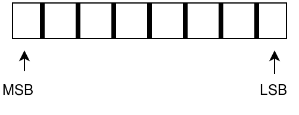

For any person studying computer science, confusing terminologies are ever-present. It is probably because the field has yet to age gracefully. Nevertheless, today we have terminologies like Monte-Carlo and Las-Vegas, car-cdr (Wikipedia) and little-big endianness. In this blog-post we are going to discuss the latter, i.e. endianness.
Endianness is a mannerism of ordering bytes in a multi-byte number, i.e do you want to order the bytes MSB first or LSB first.
Little-endian is when the first byte is placed in the LSB position, continuing towards MSB whereas Big endian is when the first byte is placed in MSB position continuing towards LSB.
Why does the order of bytes matter so much?
It matters as different applications have different endianness. For processor architectures (ARM, x86) little-endian is used whereas for networking protocols (UDP, IP, TCP) big-endian is used. To check the byte-order of your PC, type lscpu (LINUX) in the terminal.
How to remember which is which?
The way I remember is by recalling the abbreviation LL, which means Little-Endian -> LSB first. The reverse will be true for big-endian. Note: I understand that this is confusing as LL can be misunderstood for Little-endian -> Left.